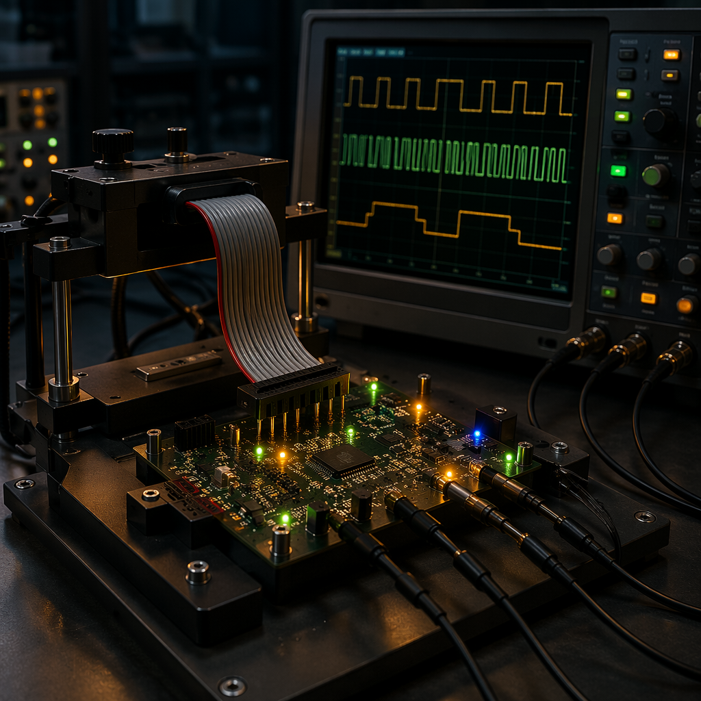
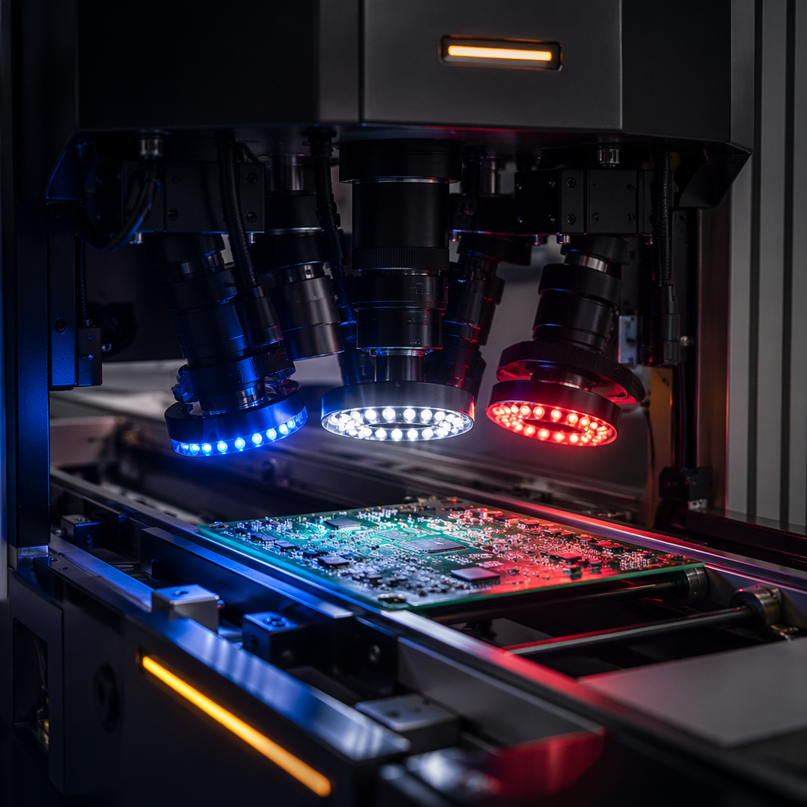
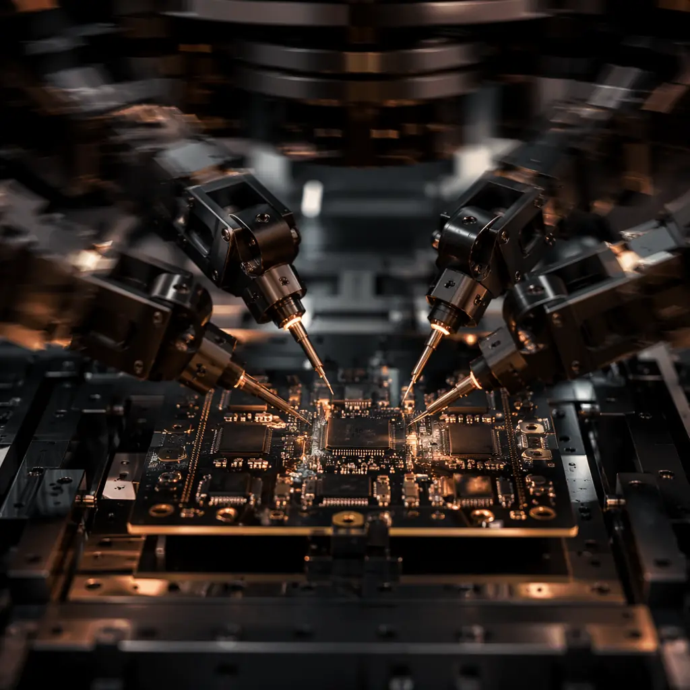

Capabilities / PCBA Assembly / Functional Testing
Comprehensive PCB and PCBA testing from bare board to powered-on functional verification. Seven test methodologies under one roof — every board that leaves our factory carries a digital test report. Custom fixtures designed and fabricated in-house. Test coverage: what you specify, we verify.
Seven Test Methods
Powered-on testing under real operating conditions. Custom test station built to your test specification — applies input signals, measures outputs, verifies firmware behavior. Simulates end-use environment: temperature, load, signal timing. Test fixture includes pogo-pin bed, power supply, signal generator, oscilloscope, and data acquisition. Firmware flashing and calibration included. Pass/fail criteria per your test plan. Full FCT report generated per board with serial number traceability.
Bed-of-nails fixture with spring-loaded pogo pins contacts every test point on the board. Measures resistor values, capacitor values, inductor values, diode polarity, transistor gain, and open/short detection on every net — without powering the board. Catches wrong components, reversed polarity, missing parts, and solder opens before functional test. Fixtures designed and fabricated in-house. Typical ICT coverage: 85-95% of all components verified.
Programmable moving probes contact test points without a dedicated fixture. Ideal for prototypes, low-volume production, and NPI where fixture cost is not justified. Four flying probes access both sides of the board simultaneously. Tests opens, shorts, component values, and diode/transistor orientation. No fixture cost and 24-hour programming turnaround. Limited to low-to-medium volume — ICT with fixture remains more economical above 500-1000 units.
Automated Optical Inspection on 100% of production boards. Koh Young Zenith 2 and Mirtec MV-6 systems capture 3D solder joint profiles from four angles at 25 micron resolution. AI-powered defect classification identifies bridging, tombstoning, lifted leads, missing components, wrong polarity, insufficient solder, and solder balls. Real-time SPC tracks defect trends across production lots. AOI is the first electrical-adjacent inspection gate — catching assembly defects before any powered test.
2D transmission X-ray on every BGA and QFN site — 100% coverage, not sample-based. Nikon XT V 160 and Nordson Dage Quadra 5 systems with automatic void analysis software. Void percentage calculated per ball against IPC-7095 thresholds. 3D computed tomography available for NPI qualification and Class 3 builds — reveals partial non-wets and head-in-pillow defects invisible in 2D. 0.5 micron feature detection resolves sub-micron cracks and intermetallic anomalies.
Extended powered operation at elevated temperature (typically 50-70C) for 24-168 hours to accelerate infant mortality failures. Boards are powered and monitored in a temperature-controlled chamber. Catches marginal components, weak solder joints, and timing issues that pass initial functional test but fail within the first hours of operation. Common requirement for medical, aerospace, and automotive Tier-1 electronics where field failure is not an option. Burn-in profiles per customer specification or industry standard.
Optical Inspection
Automated Optical Inspection is the universal gatekeeper in our production flow. After reflow soldering, every board passes through 3D AOI before it reaches any other test station. The system captures solder joint height, volume, and shape data from four camera angles — not just a single top-down view that can miss lifted leads and hidden bridges.

Fixtureless Testing
When you need 5 prototypes tested tomorrow — not 500 units next month — flying probe is the answer. Four independently programmable probes move at high speed to contact test points on both sides of the board simultaneously. No custom fixture required: we program the probe paths from your CAD data (ODB++ or IPC-2581) and Gerber files, typically within 24 hours.

3D solder paste inspection. Verifies paste volume, area, height, and alignment on every pad. Catch stencil issues before placement.
3D Automated Optical Inspection on 100% of boards. Solder joint quality, component presence, polarity, bridging, tombstoning.
2D X-ray inspection on every BGA/QFN site. Void analysis per IPC-7095. 3D CT for NPI and Class 3 verification.
In-circuit test or flying probe. Component value verification, open/short, polarity. Pass before powered test.
Functional circuit test — powered on, real operating conditions. Firmware flash, calibration. Per your test specification.
Extended powered testing at elevated temperature. 24-168 hours. Accelerates infant mortality. Medical, automotive, aerospace.
Visual inspection, label check, packaging review. Digital test report compiled. Serial number traceability confirmed. Ship.
| Test Method | What It Verifies | Coverage | Fixture Required | Best For |
|---|---|---|---|---|
| SPI | Paste volume, area, height, alignment | 100% pads | No | All production |
| 3D AOI | Solder joints, components, polarity | 100% boards | No | All production |
| X-Ray 2D | BGA/QFN voids, bridges, missing balls | 100% BGA sites | No | All BGA/QFN |
| X-Ray 3D/CT | Head-in-pillow, partial non-wets, void distribution | Per lot sample | No | NPI, Class 3 |
| Flying Probe | Component values, opens, shorts, polarity | 85-95% components | No | Proto, low volume |
| ICT | Component values, opens, shorts, polarity | 85-98% components | Yes — in-house | Mid-high volume |
| Boundary Scan / JTAG | Interconnects between JTAG devices, logic faults | JTAG-chain nets | No | Complex digital |
| FCT | Powered-on functional behavior | Per test spec | Yes — in-house | Per customer req. |
| Burn-In | Infant mortality, marginal components | Powered operation | Yes — in-house | Medical, auto, aero |
| Micro-Section | IMC layer, solder joint cross-section | Destructive sample | No | NPI, failure analysis |
For complex digital boards with BGAs, fine-pitch connectors, and high layer counts where physical test point access is limited, boundary scan (IEEE 1149.1 JTAG) provides interconnect testing without physical probe access. We support boundary scan test development and execution for complex digital assemblies.
Verifies connections between all JTAG-compliant devices on the board — even nets buried under BGAs with no physical test points. Detects opens, shorts, and stuck-at faults on every pin of every device in the scan chain. Complements ICT for high-density digital boards where physical access is limited.
Tests DDR memory buses between processors and DRAM — signal integrity, address and data line connectivity, and termination. Boundary scan patterns exercise the full memory interface at-speed. Detects marginal solder joints that pass DC continuity but fail under AC conditions.
In-system programming of flash memory, CPLDs, and FPGAs via JTAG chain. Firmware, serial numbers, MAC addresses, and security keys loaded during test. Eliminates pre-programmed device inventory management — every device is blank until test, ensuring version control.
Send your Gerber files, BOM, schematic, and test specification. Our test engineering team will propose the optimal mix of AOI, ICT, flying probe, X-ray, and FCT — with custom fixture design and fabrication included. Full test report with every shipment.